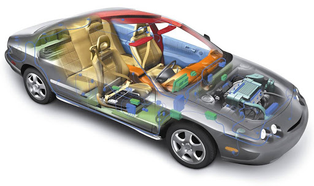

- Gépkocsi villamos hálózata, Gépkocsi multiplex hálózata
- Generátor, Generátor elektronikus feszültségszabályozója
- Akkumulátor, Akkumulátor menedzsment
- Indítómotor, Indító-generátor
- Gyújtás, előgyújtás szabályozás, Kondenzátoros gyújtás
- Benzinbefecskendezés
- Automata sebességváltók
- Közös nyomócsövű Diesel rendszer
- Blokkolás-, kipörgés-gátlók és járműdinamika szabályozás
- Légzsákok
- Világítás, Litronic, PES LED világítás és világításfejlesztési rendszerek
- Fedélzeti műszerek, fedélzeti diagnosztika, Diagnosztikai bemutatóli
- Elektromágneses zavarvédelem
- Hangjelző berendezés, ablaktörlő
- Károsanyag kibocsátás felügyelete
- Villamos hajtású gépkocsik
|

|